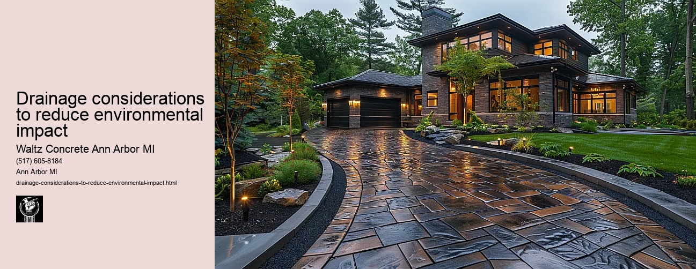

News
Concrete Driveway Installation Ann Arbor Mi
Concrete Driveway Installation Ann Arbor Mi
Choosing the right contractor for installation
Cost of concrete driveway installation in Ann Arbor
Permit requirements for driveway installation in Ann Arbor
The process and timeline of concrete driveway installation
Different types of concrete used in driveways
Maintenance and Repair of Concrete Driveways in Ann Arbor Mi
Maintenance and Repair of Concrete Driveways in Ann Arbor Mi
Preventive maintenance tips for durability
Common causes for concrete driveway damage
Professional companies offering repair services in Ann Arbor
Doityourself versus professional repairs
Costs associated with repairing a concrete driveway
Designs and Styles of Concrete Driveways in Ann Arbor Mi
Designs and Styles of Concrete Driveways in Ann Arbor Mi
Popular design trends for driveways
Considering climate factors when choosing a design or style
Unique customizations available for concrete driveways
Influence of home architecture on driveway design
Stamped stained and decorative options
Environmental Impact of Concrete Driveways in Ann Arbor Mi
Environmental Impact of Concrete Driveways in Ann Arbor Mi
Carbon footprint associated with concrete production
Use of sustainable materials in concrete driveways
Drainage considerations to reduce environmental impact
Local regulations regarding environmentally friendly driveways
Potential use of permeable or porous pavement
Alternatives to Concrete Driveways in Ann Arbor Mi
Alternatives to Concrete Driveways in Ann Arbor Mi
Asphalt driveways and their proscons
Paver stone driveways and their benefitsdrawbacks
Gravel or crushed stone as an alternative option
Comparing costs between different driveway materials
Resinbound surfaces as emerging technology
About Us
Contact Us

Drainage considerations to reduce environmental impact
Drainage considerations to reduce environmental impact
Title: Drainage Considerations to Reduce Environmental Impact
The contemporary world has witnessed an upsurge in environmental consciousness, largely driven by the escalating effects of climate change and global warming. As a part of this broader narrative, drainage systems have come under scrutiny for their potential adverse impacts on the environment. This essay explores various considerations that need to be accounted for when designing and implementing drainage systems to reduce environmental impact.
Drainage systems are integral components of our urban infrastructure, facilitating water movement in residential areas, commercial spaces, and agricultural fields. However, these systems can pose significant challenges if not properly managed. Uncontrolled stormwater runoff can lead to soil erosion, flooding and contamination of water sources with pollutants carried from roads and other paved surfaces.
One fundamental consideration is the use of sustainable drainage systems (SuDS). SuDS aim at mimicking natural water management processes as closely as possible by slowing down water runoff rates through storage or infiltration methods. Examples include green roofs that absorb rainwater, porous pavements allowing infiltration into the ground below, or constructed wetlands designed to store excess stormwater temporarily.
Another critical aspect is pollution control. Runoff from city streets often contains oil residues, heavy metals like lead and zinc - all toxic substances harmful to both humans and wildlife. Installing pollutant traps or filters at key points within the drainage system could significantly curtail such contamination threats.
Proper waste disposal also plays a vital role in reducing environmental impact caused by poor drainage practices. Illegally dumped waste tends to clog drains leading to overflow during heavy rains causing flash floods which might disrupt human activity while endangering flora and fauna alike.
Consideration must also be given to biodiversity enhancement options associated with drainage infrastructure. For example, creating vegetated swales or ditches instead of concrete channels provides habitats for local wildlife while still performing its primary function conveying stormwater runoff safely away from built-up areas.
Lastly but importantly comes community engagement. The success of any environmental-friendly drainage system is partly dependent on the cooperation it receives from local communities. Education and awareness programs about responsible water use, waste disposal practices and the importance of maintaining such systems can go a long way in ensuring their effectiveness.
Implementing these considerations might appear costly at first glance, but it's crucial to note that the price we pay for neglecting our environment is much higher. Moreover, many sustainable drainage solutions have shown to be cost-effective over time due to lower maintenance requirements compared to traditional systems.
In conclusion, as we continue building towards a more sustainable future, rethinking our approach towards drainage systems becomes imperative. From using SuDS and curbing pollution to promoting biodiversity and engaging communities - each consideration forms a critical piece of this complex puzzle. Reduction of environmental impact should not just be an afterthought; instead, it must take center stage in all aspects relating to drainage planning and design.
Use of sustainable materials in concrete driveways
Drainage considerations to reduce environmental impact
Frequently Asked Questions
What are the potential environmental impacts of concrete driveways?
The environmental impacts of concrete driveways can include increased runoff and pollution from rainwater, habitat destruction during construction, and the carbon emissions associated with manufacturing concrete.
How can proper drainage design minimize these impacts in Ann Arbor, MI?
Proper drainage design can minimize these impacts by preventing excess water from pooling on surfaces or running off into local waterways. This could involve using permeable materials for the driveway, grading the area to direct water flow, or installing drains or channels to carry away excess water.
Can a pervious concrete driveway help in reducing environmental impact?
Yes, a pervious (or permeable) concrete driveway allows rainwater to seep through it and into the ground below. This reduces runoff that can carry pollutants into local waterways and helps recharge groundwater supplies.
Are there any specific drainage regulations for driveways in Ann Arbor, MI that need to be considered?
Yes, Ann Arbor has regulations regarding stormwater management which may apply to your driveway project. Its recommended you check with local authorities or a professional contractor who is familiar with these rules before starting construction.
What maintenance measures are needed for a sustainable drainage system?
Maintenance measures for sustainable drainage systems might include regular cleaning of drains and channels to remove debris and prevent blockages; inspecting and repairing any damaged areas promptly; replenishing gravel or other permeable materials as needed; and monitoring the system during heavy rains to ensure its working properly.
Drainage considerations to reduce environmental impact